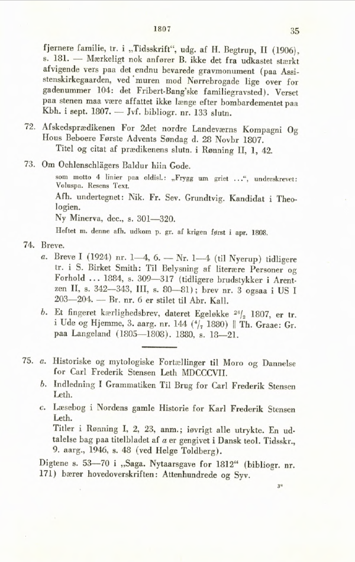

Repositoriet med XML-filer hedder: GV. Det ligger på adressen:
https://github.com/GrundtvigsVaerker.
Mappestruktur
Mappestrukturen i repositoriet er følgende.
Filerne ligger i mapper navngivet efter årstal kaldet årstalsmapper.
I hver årstalsmappe ligger der en mappe for hvert værk navngivet med pågældende årstal efterfulgt af underscore og et tal, f.eks. 1807_73. Tallet efter underscore stammer fra Steen Johansens bibliografi over Grundtvigs værker. På side 4 er vist et eksempel på en side fra bibliografien. Tallet kalder vi SJ-nummeret. Mapperne i årstalsmapperne indeholder de XML-filer der var og bliver udgangspunktet for de færdige filer.
I årstalsmappen ligger også en mappen navngivet med årstal efterfulgt af GV, f.eks. 1807GV. Den mappe kalder vi GV-mappen. I GV-mappen gentages struktur og navne fra årstalsmappen.
Det er i GV-mappen man finder færdige filer og de filer, der aktuelt arbejdes på til den næste version.
Filerne i GV-mapperne udgør altså tilsammen alle tidligere versioner af http://grundtvigsværker.dk og den version som aktuelt er under forberedelse.
Det er altså GV-mapperne hvorfra KB skal publicere udgaven i tekstportalen.
For året 1807 ser strukturen således ud:
1807 (= årstalsmappe)
1807_61
1807_63
1807_65
1807_67
1807_73
1807GV (= GV-mappe)
1807_61
1807_63
1807_65
1807_67
1807_73
XML-filer
Filnavne:
Mapperne under GV-mappen indeholder hver i alt fem XML-filer:
../../
1807_73
1807_73_com.xml
1807_73_intro.xml
1807_73_txr.xml
1807_73_txt.xml
1807_73_v0.xml
Filerne navngives på følgende måde: årstal_SJ-nummer_type.xml.
Hvis et nummer i Steen Johansens bibliografi refererer til f.eks. et tidsskrift, hvor Grundtvig har skrevet to eller flere bidrag, tilføjes endnu et nummer efter SJ-nummeret:
../../
1816_297_11
1816_297_11_com.xml
1816_297_11_intro.xml
1816_297_11_txr.xml
1816_297_11_txt.xml
1816_297_11_v0.xml
Det ekstra nummer angiver den pågældende teksts nummer i rækken af bidrag fra Grundtvig. I eksemplet er 1816_297_11 altså Grundtvigs 11. bidrag under Steen Johansens hovednummer 297.
Filtyper:
Typerne er:
*txt.xml er tekstfilen med Grundtvigs tekst
*com.xml indeholder punktkommentaren til tekstfilen
*txr.xml indeholder tekstredegørelsen til tekstfilen
*intro.xml er indledning til tekstfilen
*v0.xml oplyser om varianter til teksten
Der findes altid én punktkommentar, én tekstredegørelse og én variantfil til hver tekstfil.
Der er en undtagelse fra reglen om fem filer i hver mappe under GV-mappen. Undtagelsen gælder for indledninger. En indledning kan være indledning for to eller flere tekster. I de tilfælde ligger den fælles indledning altid i mappen med det laveste SJ-nummer for de tekster indledningen er fælles for.
I mappen https://github.com/GrundtvigVaerker/GV/1818/1818GV/1818_329 findes filen 1818_329_intro.xml.
Den indledning er fælles for teksterne 1818_329_txt.xml, 1818_330_txt.xml, 1818_331_txt.xml og 1818_332_txt.xml, hvorfor der i disse tre mappen ikke findes en xml-fil af typen *intro.xml.
Det fremgår af <teiHeader> i indledningen, hvilke tekster den er fælles indledning for.
Side fra Steen Johansens bibliografi:
